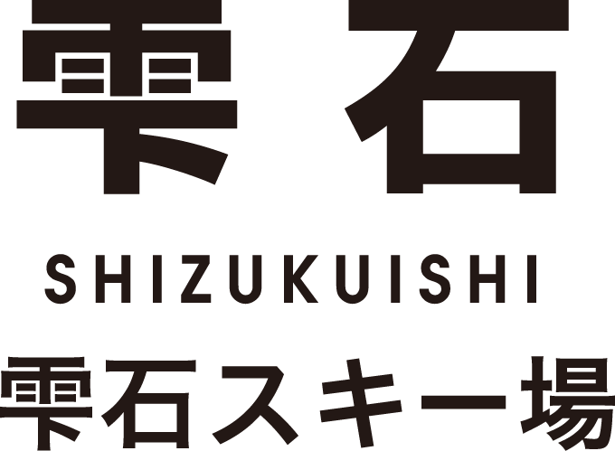

遠くに鳥海山、岩手山を望むことができる国内屈指の積雪量とパウダースノーが自慢です。
大人気のツリーランエリアやスノーモービルなどのアクティビティも充実しています。
スキーセンターには託児施設、大展望天然風呂があり、
ゲレンデまで徒歩0分のスキーヤーズベッドやコンドミニアムで宿泊も可能です。
北上駅からの無料シャトルバスでアクセスも楽々。
ウインターリゾートいわて
住所
夏油高原スキー場
〒024-0322
岩手県北上市和賀町岩崎新田国有林内
☏ 0197-65-9000
今シーズンも小学生以下リフト無料！！たっぷり積もったアスピリンスノーの感触と
ダイナミックな急斜面とで地元スキーヤーに愛されてきた伝統のスキー場。
アフタースキーは1300年の名湯「網張温泉」でごゆっくりしてみては？
住所
網張温泉スキー場
〒020-0585
岩手県岩手郡雫石町長山小松倉１４−３
☏ 019-693-2211
安比高原スキー場は、オーストリアのアルベルクやアメリカのアスペンなど世界を代表するスキーエリアと同じ北緯40度にあり、 国立公園八幡平から連なる標高1,304mの前森山と1,328mの西森山に広がるゲレンデは、 主に日照時間の短い北斜面にスロープを配していることから「キュッキュッ」と鳴る良質のアスピリンスノーに恵まれ、 12月上旬～5月上旬の春スキーまで、長い期間ウィンタースポーツを楽しむことが出来ます。
住所
安比高原スキー場
〒028-7306
岩手県八幡平市安比高原１１７
☏ 0195-73-5111
眼前に雄大な岩手山を望む絶好のロケーションのなか、下倉の壁と言われる最大斜度37度の急斜面、
斜度や地形が変化するロングクルージングコース、
ウルトラライトパウダーという極上のパウダースノーが楽しめる4つのツリーランエリアなど、
変化に富んだスノーエリアです。
また、下倉スキー場はリフト運行率99.4％を誇り、
季節風の影響を受けないことで有名です。
住所
八幡平パノラマスキー場
〒028-7302
岩手県八幡平市松尾寄木第１地割５０９−１
☏ 0195-78-2577

今シーズンはさらにパークエリアがスケールアップ！
豊富なバリエーション＆初級者から上級者まで満足できるアイテムが勢揃い。
小学生までのお子さまのリフト料金が無料や
CATツアー専用コースでパウダーランが楽しめます。
お子さまに人気の「スノーストライダー」も一部ゲレンデで滑走可能！
雫石プリンスホテルが隣接、アフタースキーには温泉遺産にも認定された、池の鯉を眺めながらの温泉露天風呂『雫石高倉温泉』で疲れた体を癒すことができます。
住所
雫石スキー場
〒020-0854
岩手県岩手郡雫石町高倉温泉
☏ 019-693-1111